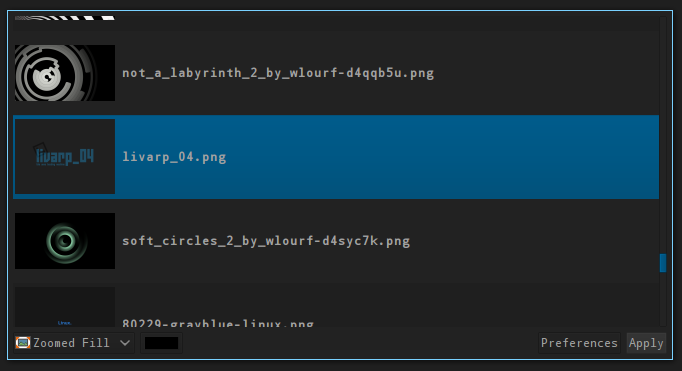

lang fr|gb

background
wallpaper management is provided by feh in the default configuration, and can be determined in your $HOME/bin/start/your_wm_start.sh..
but if you want to choose your wallpaper the gui'way, livarp includes nitrogen.

nitrogen can be found on the different livarp menus: section configuration:background/wallpaper.
if you want to restore the wallpaper set by nitrogen, you have to edit your $HOME/bin/start/your_wm_start.sh or $HOME/.config/openbox/autostart:
- comment the feh line (add a "#")
- uncomment the nitrogen line (delete the "#")
random wallpaper
to display a different wallpaper for each session, and change during the session, we will use feh. Here is a small script that displays a random wallpaper from a folder specified at the beginning of the session, then change the wallpaper at regular intervals
#! /bin/sh
# random wallpaper script
# images directory
DIR="/path_to_directory"
# wall rotation delay in seconds
INT="600"
while true; do
find $DIR -type f -name '*.jpg' -o -name '*.png' | shuf -n 1 | xargs feh --no-xinerama --bg-scale &
sleep $INT
done
exit 0
you just have to run this script from one of your $HOME/bin/start scripts.
# random wallpaper
randwalls.sh &